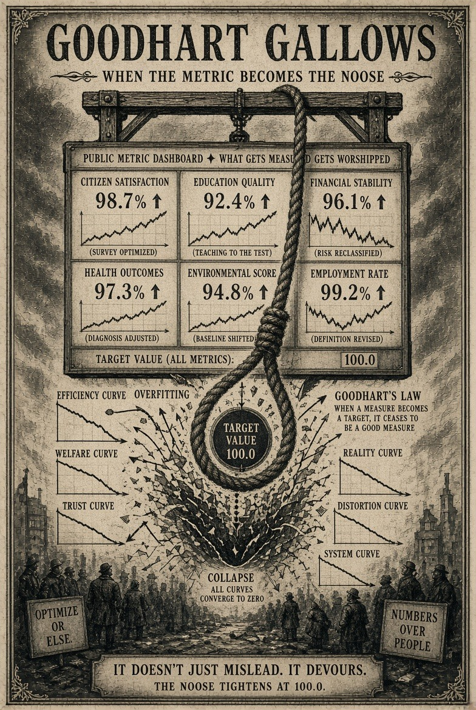
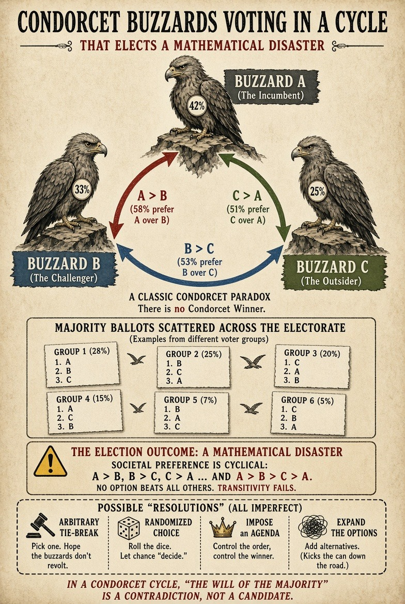
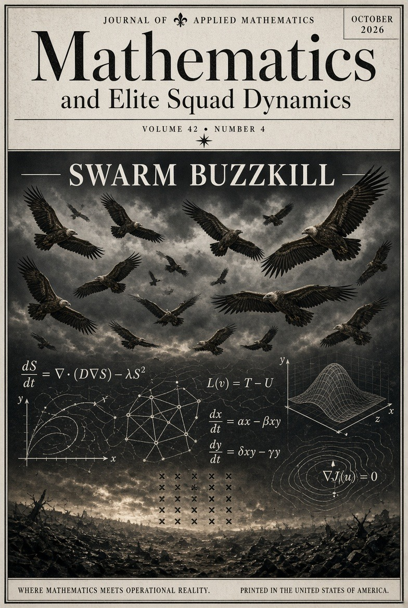

The Buzzard Threshold: On the Numerical Superiority of Idiots
A smaller squad, a larger flock, and a congestion theorem no minister wants to hear.
Read the full manuscript →

Every empire begins with a metric and ends with an excuse. The metric proves it is advancing. The excuse explains why everybody is falling off the cliff. Between these two departments dwells the modern science of governance, whose experimental apparatus is a podium and whose control group has been arrested.
We propose a less dignified method. Write an actual equation. State its assumptions. Derive an actual consequence. Then turn the full ceremonial cannon of satire upon anyone—especially ourselves—who mistakes a pleasing formalism for an observed fact.
A smaller squad, a larger flock, and a congestion theorem no minister wants to hear.
A residual filter discovers the difference between remembering the past and hiding it.
The graph reaches consensus while remaining magnificently wrong.
When the dashboard becomes the constitution, public value goes to the gallows.
A random graph awards your rumor a ministerial office.
Majority voting, correlated errors, and the mathematically elected disaster.
A very real gradient-flow calculation declines to certify a fifth force.
The image files are presented here in context: cover art first, then plates grouped with the dispatches they illustrate. Every repository image is included, including alternate and repeated-name variants. Numeric callouts inside the artwork are part of the satire or schematic and should not be read as measured findings.










In the wake of Swift, Bierce, Thompson, Mencken, Wiener, and every exasperated mathematician who has ever asked for a denominator, this journal is a literary experiment: mathematically checkable satire, with its nonsense flagged, its failures printable, and its editor gloriously replaceable by an empirical observation.
Reader beware: the papers include proven claims within their explicitly defined mathematical models and speculative EFMW analogies. Neither is evidence of a new physical law. Political claims are commentary, not measured findings. The manuscript links lead to GitHub Markdown, which displays the original equations as source where rendering support varies.